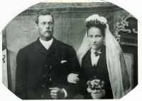
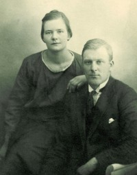

Lovise og Håkon sin slekt og familie
Lovise f. Eggan og Håkon Wahl
Personside 1 755
Svein Brækkan
M, #43851, f. 13 juli 1948, d. 3 september 2007
Foreldre
| Far | Leif Johan Jakobsen Brækkan (f. 17 november 1916, d. 21 november 1994) |
| Mor | Rigmor Synnøve Teie (f. 7 juni 1920, d. 29 august 1981) |
Familie:
| Sønn | Sven Magne Brækkan |
Biografi
Svein Brækkan ble født den 13 juli 1948 Kolvereid, Nærøy, Nord-Trøndelag. Han døde den 3 september 2007 på/i Kolvereid, Nærøy, Nord-Trøndelag. Han ble gravlagt den 7 september 2007 på/i Kolvereid kirke, Nærøy, Nord-Trøndelag.
| Sist redigert | 6 mars 2010 00:00:00 |
| Slektskap | 7-menning til Håkon Wahl |
Per Brækkan
M, #43854, f. 9 januar 1946, d. 3 november 2025
Foreldre
| Far | Leif Johan Jakobsen Brækkan (f. 17 november 1916, d. 21 november 1994) |
| Mor | Rigmor Synnøve Teie (f. 7 juni 1920, d. 29 august 1981) |
Familie: Emmy Otelie Pedersen (f. 2 oktober 1947, d. 1 april 2022)
| Datter | Gørild Brækkan+ |
| Datter | Anita Brækkan+ |
| Datter | Gulli-Anne Brækkan+ |
| Datter | Hildegunn Brækkan+ |
Biografi
Per Brækkan ble født den 9 januar 1946 Kolvereid, Nærøy, Nord-Trøndelag. Han giftet seg med Emmy Otelie Pedersen den 13 april 1968. Han døde den 3 november 2025 på/i Sykehuset Namsos, Namsos, Trøndelag. Han ble gravlagt den 12 november 2025 på/i Lundring kirkegård, Nærøysund, Trøndelag.
Per Brækkan ble konfirmert den 2 juli 1961 på/i Kolvereid kirke, Nærøy, Nord-Trøndelag.
| Sist redigert | 12 november 2025 14:31:17 |
| Slektskap | 7-menning til Håkon Wahl |
Emmy Otelie Pedersen
K, #43855, f. 2 oktober 1947, d. 1 april 2022
Foreldre
| Far | Arthur Johannes Pedersen (f. 25 oktober 1914, d. 7 august 1975) |
| Mor | Eva Bøkestad (f. 22 september 1926) |
Familie: Per Brækkan (f. 9 januar 1946, d. 3 november 2025)
| Datter | Gørild Brækkan+ |
| Datter | Anita Brækkan+ |
| Datter | Gulli-Anne Brækkan+ |
| Datter | Hildegunn Brækkan+ |
Biografi
Emmy Otelie Pedersen ble født den 2 oktober 1947 Bindal, Nordland. Hun giftet seg med Per Brækkan den 13 april 1968. Hun døde den 1 april 2022 på/i Sykehuset Levanger, Levanger, Trøndelag. Hun ble gravlagt den 12 april 2022 på/i Kolvereid kirkegård, Nærøysund, Trøndelag.
Emmy Otelie Pedersen was also known as Emmy Otelie Brækkan.
| Sist redigert | 6 april 2022 00:00:00 |
Arthur Johannes Pedersen
M, #43856, f. 25 oktober 1914, d. 7 august 1975
Foreldre
| Far | Ræder Lorentsen (f. 12 juni 1895, d. 10 februar 1952) |
| Mor | Helga Pedersen (f. 1892) |
Familie: Eva Bøkestad (f. 22 september 1926)
| Datter | Emmy Otelie Pedersen+ (f. 2 oktober 1947, d. 1 april 2022) |
Biografi
Arthur Johannes Pedersen ble født u.e. den 25 oktober 1914 på/i Krokå, Brønnøy, Nordland. Han giftet seg med Eva Bøkestad. Han døde den 7 august 1975 på/i Vikestad, Bindal, Nordland.
Arthur Johannes Pedersen was also known as Arthur Johannes Lorentzen. Han was also known as Arthur Johannes Lorentsen. Han ble døpt den 26 desember 1914 på/i Brønnøy, Nordland.
| Sist redigert | 13 august 2025 10:18:44 |
Stefanus Andreas Andersen
M, #43861, f. 9 april 1826, d. 14 januar 1908
Foreldre
| Far | Anders Brynoldsen (f. før 1806) |
| Mor | Rebekka Stephensdatter |
Familie: Ellen Marie Danielsdatter (f. 10 juni 1831, d. 28 oktober 1910)
| Sønn | Anton Daniel Stefanusen+ (f. 20 oktober 1858, d. 7 januar 1923) |
| Datter | Anna Regine Stefanusdatter+ (f. 8 april 1860, d. før 1900) |
| Datter | Sofie Elisabeth Stefanusdatter (f. 25 september 1862, d. 12 april 1869) |
| Sønn | "Gutt" Stefanusen (f. 26 mai 1866, d. 26 mai 1866) |
| Datter | Sella Emilie Stefanusdatter (f. 7 april 1871, d. 29 oktober 1891) |
Biografi
Stefanus Andreas Andersen ble født den 9 april 1826 Rodal, Rodalstrand, Brønnøy, Nordland. Han giftet seg med Ellen Marie Danielsdatter. Han døde den 14 januar 1908 på/i Rodal, Rodalstrand, Brønnøy, Nordland.
| Sist redigert | 12 september 2007 00:00:00 |
Anders Brynoldsen
M, #43862, f. før 1806
Familie: Rebekka Stephensdatter
| Sønn | Stefanus Andreas Andersen+ (f. 9 april 1826, d. 14 januar 1908) |
Biografi
Anders Brynoldsen ble født før 1806. Han giftet seg med Rebekka Stephensdatter.
| Sist redigert | 25 april 2019 00:00:00 |
Rebekka Stephensdatter
K, #43863
Familie: Anders Brynoldsen (f. før 1806)
| Sønn | Stefanus Andreas Andersen+ (f. 9 april 1826, d. 14 januar 1908) |
Biografi
Rebekka Stephensdatter ble født. Hun giftet seg med Anders Brynoldsen.
| Sist redigert | 12 september 2007 00:00:00 |
Anton Daniel Stefanusen
M, #43864, f. 20 oktober 1858, d. 7 januar 1923
Foreldre
| Far | Stefanus Andreas Andersen (f. 9 april 1826, d. 14 januar 1908) |
| Mor | Ellen Marie Danielsdatter (f. 10 juni 1831, d. 28 oktober 1910) |
Familie: Johanna Maria Hansdatter (f. 12 september 1864, d. 12 juli 1949)
| Datter | Aasta Johanne Antonsen (f. 15 november 1893) |
| Sønn | Sverdrup Emil Antonsen Rodahl+ (f. 10 februar 1898, d. 26 september 1953) |
{kind=link}

Johanna og Anton Rodal
Biografi
Anton Daniel Stefanusen ble født den 20 oktober 1858 Kvaløen, Brønnøy, Nordland. Han giftet seg med Johanna Maria Hansdatter den 23 juli 1893 på/i Mo, Rana, Nordland. Han døde av kreft - legen var til stede - den 7 januar 1923 på/i Brønnøy, Nordland. Han ble gravlagt den 15 januar 1923 på/i Brønnøysund, Brønnøy, Nordland.
Anton Daniel Stefanusen was also known as Anton Daniel Rodal. Han bodde på/i Rodal, Rodalstrand, Brønnøy, Nordland.
| Sist redigert | 28 juni 2026 22:30:54 |
| Slektskap | Søskenbarn 4 ganger forskjøvet til Håkon Wahl |
Anna Regine Stefanusdatter
K, #43865, f. 8 april 1860, d. før 1900
Foreldre
| Far | Stefanus Andreas Andersen (f. 9 april 1826, d. 14 januar 1908) |
| Mor | Ellen Marie Danielsdatter (f. 10 juni 1831, d. 28 oktober 1910) |
Familie: Ole Jørgen Jensen (f. omtrent 1858)
| Sønn | Anton Olsen (f. 25 juni 1886) |
| Sønn | Ole Andreas Olsen (f. 7 april 1889) |
Biografi
Anna Regine Stefanusdatter ble født den 8 april 1860 Kvaløen, Brønnøy, Nordland. Hun giftet seg med Ole Jørgen Jensen den 30 oktober 1883 på/i Brønnøy, Nordland. Hun døde før 1900 på/i Kvaløen, Brønnøy, Nordland.
Anna Regine Stefanusdatter was also known as Anna Regine Jensen.
| Sist redigert | 20 september 2007 00:00:00 |
| Slektskap | Søskenbarn 4 ganger forskjøvet til Håkon Wahl |
Sofie Elisabeth Stefanusdatter
K, #43866, f. 25 september 1862, d. 12 april 1869
Foreldre
| Far | Stefanus Andreas Andersen (f. 9 april 1826, d. 14 januar 1908) |
| Mor | Ellen Marie Danielsdatter (f. 10 juni 1831, d. 28 oktober 1910) |
Biografi
Sofie Elisabeth Stefanusdatter ble født den 25 september 1862 Rodal, Rodalstrand, Brønnøy, Nordland. Hun døde den 12 april 1869 på/i Rodal, Rodalstrand, Brønnøy, Nordland.
| Sist redigert | 12 september 2007 00:00:00 |
| Slektskap | Søskenbarn 4 ganger forskjøvet til Håkon Wahl |
"Gutt" Stefanusen
M, #43867, f. 26 mai 1866, d. 26 mai 1866
Foreldre
| Far | Stefanus Andreas Andersen (f. 9 april 1826, d. 14 januar 1908) |
| Mor | Ellen Marie Danielsdatter (f. 10 juni 1831, d. 28 oktober 1910) |
Biografi
"Gutt" Stefanusen ble født den 26 mai 1866 Rodal, Rodalstrand, Brønnøy, Nordland. Han var dødfødt. Han døde den 26 mai 1866 på/i Rodal, Rodalstrand, Brønnøy, Nordland.
| Sist redigert | 4 oktober 2010 00:00:00 |
| Slektskap | Søskenbarn 4 ganger forskjøvet til Håkon Wahl |
Sella Emilie Stefanusdatter
K, #43868, f. 7 april 1871, d. 29 oktober 1891
Foreldre
| Far | Stefanus Andreas Andersen (f. 9 april 1826, d. 14 januar 1908) |
| Mor | Ellen Marie Danielsdatter (f. 10 juni 1831, d. 28 oktober 1910) |
Biografi
Sella Emilie Stefanusdatter ble født den 7 april 1871 Rodal, Rodalstrand, Brønnøy, Nordland. Hun døde den 29 oktober 1891 på/i Rodal, Rodalstrand, Brønnøy, Nordland.
| Sist redigert | 12 september 2007 00:00:00 |
| Slektskap | Søskenbarn 4 ganger forskjøvet til Håkon Wahl |
Johanna Maria Hansdatter
K, #43869, f. 12 september 1864, d. 12 juli 1949
Foreldre
| Far | Hans Andreas Pedersen (f. før 1844) |
| Mor | Berith Johanna Andersdatter (f. før 1844) |
Familie: Anton Daniel Stefanusen (f. 20 oktober 1858, d. 7 januar 1923)
| Datter | Aasta Johanne Antonsen (f. 15 november 1893) |
| Sønn | Sverdrup Emil Antonsen Rodahl+ (f. 10 februar 1898, d. 26 september 1953) |
Johanna og Anton Rodal
Biografi
Johanna Maria Hansdatter ble født den 12 september 1864 Baksundholmen, Bodin, Bodø, Nordland. Hun giftet seg med Anton Daniel Stefanusen den 23 juli 1893 på/i Mo, Rana, Nordland. Hun døde den 12 juli 1949 på/i Brønnøy, Nordland. Hun ble gravlagt den 19 juli 1949 på/i Brønnøysund, Brønnøy, Nordland.
Johanna Maria Hansdatter was also known as Johanna Maria Rodal. Hun ble døpt den 25 juni 1865 på/i Bodø kirke, Bodø, Nordland.
| Sist redigert | 28 juni 2026 22:31:08 |
Hans Andreas Pedersen
M, #43870, f. før 1844
Familie: Berith Johanna Andersdatter (f. før 1844)
| Datter | Johanna Maria Hansdatter+ (f. 12 september 1864, d. 12 juli 1949) |
Biografi
Hans Andreas Pedersen ble født før 1844. Han giftet seg med Berith Johanna Andersdatter.
| Sist redigert | 12 september 2007 00:00:00 |
Berith Johanna Andersdatter
K, #43871, f. før 1844
Familie: Hans Andreas Pedersen (f. før 1844)
| Datter | Johanna Maria Hansdatter+ (f. 12 september 1864, d. 12 juli 1949) |
Biografi
Berith Johanna Andersdatter ble født før 1844. Hun giftet seg med Hans Andreas Pedersen.
| Sist redigert | 12 september 2007 00:00:00 |
Aasta Johanne Antonsen
K, #43872, f. 15 november 1893
Foreldre
| Far | Anton Daniel Stefanusen (f. 20 oktober 1858, d. 7 januar 1923) |
| Mor | Johanna Maria Hansdatter (f. 12 september 1864, d. 12 juli 1949) |
Biografi
Aasta Johanne Antonsen ble født den 15 november 1893 Rodal, Rodalstrand, Brønnøy, Nordland.
Aasta Johanne Antonsen ble døpt den 6 januar 1894 på/i Brønnøy, Nordland. Hun ble konfirmert den 5 juli 1908 på/i Brønnøy, Nordland.
| Sist redigert | 20 september 2007 00:00:00 |
| Slektskap | 3-menning 3 ganger forskjøvet til Håkon Wahl |
Sverdrup Emil Antonsen Rodahl
M, #43873, f. 10 februar 1898, d. 26 september 1953
Foreldre
| Far | Anton Daniel Stefanusen (f. 20 oktober 1858, d. 7 januar 1923) |
| Mor | Johanna Maria Hansdatter (f. 12 september 1864, d. 12 juli 1949) |
Familie: Ellen Hansine Hansen (f. 7 oktober 1903, d. 1975)
| Datter | Anny Johanne Rodahl+ (f. 1 mai 1924, d. 31 oktober 2000) |
| Sønn | Sverre Rodahl+ (f. 24 mars 1927, d. 20 juni 2000) |
| Sønn | Arne Josef Rodahl+ (f. 2 juni 1928, d. 21 juni 2010) |
| Datter | Ellis Signora Rodahl+ (f. 30 mai 1930, d. 30 november 1996) |
| Sønn | Hans Evald Rodahl+ (f. 28 august 1932, d. 2 april 1996) |
| Datter | Klara Rodahl |
| Datter | Åshild Rodahl (f. 10 juli 1938, d. 2 januar 1987) |
{kind=link}

Sverdrup Emil Rodahl og Ellen Hansen
Biografi
Sverdrup Emil Antonsen Rodahl ble født den 10 februar 1898 Rodal, Rodalstrand, Brønnøy, Nordland. Han giftet seg med Ellen Hansine Hansen. Han døde den 26 september 1953 på/i Kabelvåg, Vågan, Nordland.
Han døde den 26 september 1953 på/i Kabelvåg, Vågan, Nordland.
Han døde den 26 september 1953 på/i Kabelvåg, Vågan, Nordland. Sverdrup Emil Antonsen Rodahl ble døpt den 15 mai 1898 på/i Brønnøy, Nordland. Han ble konfirmert den 14 juli 1912 på/i Brønnøy, Nordland. Han ville at familien skulle hete Sverdrup til etternavn, men dette ble ikke godtatt av familien Sverdrup i Oslo.
| Sist redigert | 28 juni 2026 17:21:17 |
| Slektskap | 3-menning 3 ganger forskjøvet til Håkon Wahl |